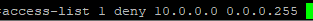
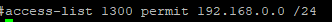
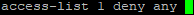
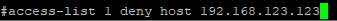

access-list X [deny | permit | remark ] [ network | any | host ] [ log ]
X: Hace referencia al número identificativo de la ACL.
[ deny | permit |remark ]: Indica que hará si encuentra una ocurrencia (match), si lo permite o lo deniega. En el caso de remark es simplemente un comentario informativo, por ejemplo para indicar que hace la línea de la ACL.
[ network | any | host ]: A quién afecta dicha ACL, a una red de equipos, a cualquiera o a un host.
💥 Network siempre va asociado de una wildcard (máscara inversa).


💥 Any: Simplemente afecta a cualquiera.

💥 Host: Afecta un equipo en concreto.

Log: Simplemente registra cada vez que hay un match debido a esa regla en concreto. No es muy recomendable al no ser que sea algo muy importante de lo que queramos visibilidad. El problema es que consume CPU y memoria.
ip access-list extended ACL-PROTECT-OUT
deny tcp any any fragments
deny udp any any fragments
deny icmp any any fragments
deny ip any any fragments
deny tcp any any eq www
deny udp any any eq domain
deny tcp any any eq domain
permit ip any any
ip access-list extended ACL_PROTECT
deny tcp any any fragments
deny udp any any fragments
deny icmp any any fragments
deny ip any any fragments
permit icmp 192.168.123.0 0.0.0.255 any echo
permit ip 192.168.123.0 0.0.0.255 any
permit ip 84.232.0.0 0.0.0.255 any
permit ip 77.123.0.0 0.0.0.255 any
deny ip any any